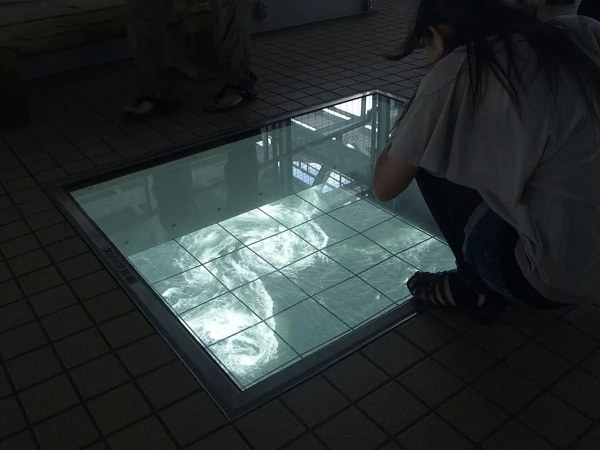
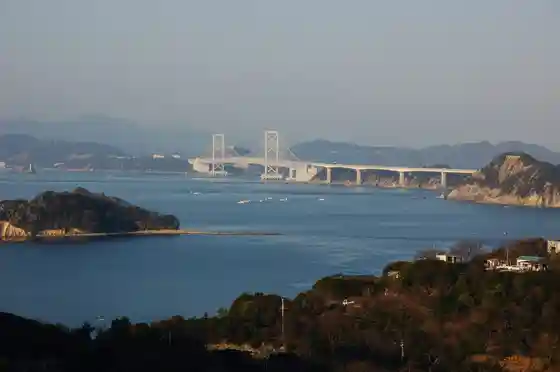
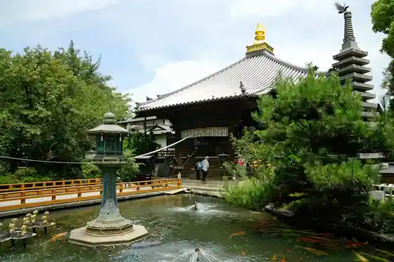
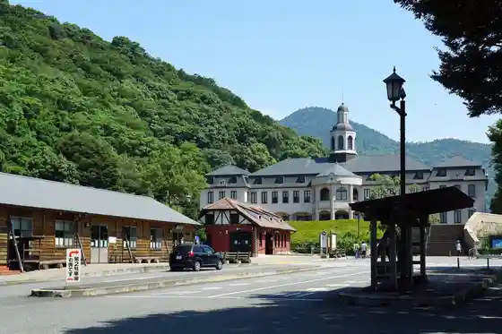
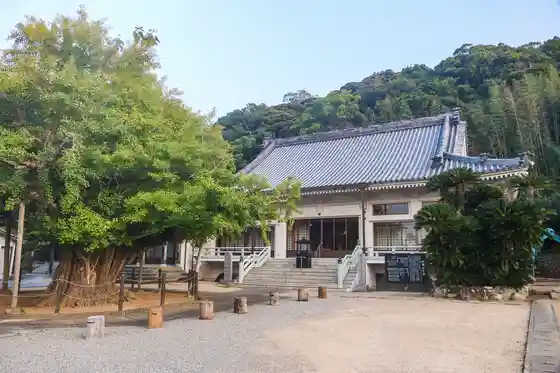

Naruto
Naruto · Tokushima
Naruto
Highlighted on the Tokushima map.

Stay
Aoawonaruto Resort
Resort Hotel Moanakosuto
Hotel Rotasusuperia Resort Naruto
Hotel Nekuseru Naruto
Hotel Eriawan Naruto
Hotel Kuraunhiruzu Naruto Kosoku Naruto Mae
Gu Land Ekushibu Naruto Za Rojji
Hotel Fasutoshiizun Naruto
Bijinesu Hotel Naruto
Hotel Kakuin Naruto
Famiriirojji Hatago Ya Naruto Ekimae Mise
NEXEL α Naruto
Bei Resort Hotel Naruto Kurage
Park Mizuno
Naruto Gu Land Hotel Kurage
Naruto Kurage Betsu Tei Shiisaido Hotel Tai Maru Kurage
Ryori Ryokan Otorii En
Oshanvira Naruto
Hanami Yama Hausuandanahha
Hotel O. Naruto (2026 Nen 7 Gatsu 31 Nichi Opun)
Guranpuremia Naruto Oshambyutento & Vira (2026 Nen 7 Gatsu 31 Nichi Opun)
Hotel Rijji
Dining
Sushi Kachi
Nihonryori Eitai
Ikeuo Ryori Bimbi Ie
Chugokuryori Sui Yo
Unagi Tokoro Oka
Ichi Takumi
Bonakyu
Hatsu Umi
Arashi
I no Tani Naruto Mise
Foshiizun
Funamoto Udon
Kafe Do Jiverunii
Risutorante Fisshubon
Onsen
Naruto Onsen Rotemburo Hyo
Outdoor bath Hanada at Aoao Naruto Resort (Naruto Onsen)
Aoawonaruto Resort Rotemburo
Hotel Fasutoshiizun Naruto Public Bath
Resort Hotel Moanakosuto Rotemburo
Bei Resort Hotel Naruto Kurage Public Bath
Park Mizuno Public Bath
Gu Land Ekushibu Naruto Za Rojji Rotemburo
Naruto Gu Land Hotel Kurage Public Bath
Naruto Kurage Betsu Tei Shiisaido Hotel Tai Maru Kurage Rotemburo
NEXEL α Naruto Public Bath
Oshanvira Naruto Public Bath
Experience
Dai Naruto Hashi Promenade Uzu no Michi
Naruto Strait from Uzunomichi walkway, Naruto City
Naruto Doitsu Kan
Naruto German House, Oasa-cho, Naruto
Otsuka Kokusai Art Museum
Otsuka Museum of Art facade, Naruto City
Sights
Naruto no Uzushio
Naruto whirlpools from Uzunomichi, Naruto City
Dai Naruto Hashi
Ōnaruto Bridge, Naruto City

Ryosen Tera
Ryōzen-ji, Shikoku pilgrimage temple 1, Naruto

Roadside Station Daiku Village
Michinoeki Daiku-no-sato, Oasa-cho, Naruto

Hase Tera
Chōkoku-ji temple grounds, Naruto City
